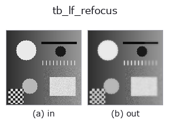

typed op• 資料種類:lightfield → image
• 呼叫:fullseye.apply(img, "tb_lf_refocus", a=0.5, b=0.5)(2-D 的模型是一張圖 + 兩個純量旋鈕 a,b∈[0,1])

*圖為在 128×128 合成輸入上實際執行的輸出。左為輸入，右為輸出。點雲以俯視散點顯示(亮度 = z)，一維序列為折線，體資料為沿 z 的最大值投影，影片為中間影格，複數影像為振幅；無法成像的回傳值直接顯示數值。*
*旋鈕 a 不改變輸出(實測: 0.1 / 0.5 / 0.9 相同)。*
*旋鈕 b 不改變輸出(實測: 0.1 / 0.5 / 0.9 相同)。*
階段(前置運算子 → 本運算子，由左至右):
▸ tb_lf_refocus: stages (docs site)
換別的影像(合成場景 / 照片 / 硬幣。上排為輸入，下排為對應輸出。旋鈕取預設):
▸ tb_lf_refocus: other inputs (docs site)
位移疊加重新對焦：在指定 *slope* 對焦的合成孔徑影像。
> 以下的詳細說明為原文 —— 摘要與標題已翻譯。
Every view `(v, u) is shifted by (-s*(v - v_c), -s*(u - u_c))` — the
minus undoes the parallax of a point at slope `s` — and the shifted
views are averaged. Points at that slope add coherently and stay sharp;
everything else is smeared by an amount proportional to its slope
difference times the angular baseline. `slope=0` is the plane the array
was already focused on and returns the plain average of the views.
Ground truth it reproduces exactly (pinned in `tests/test_lightfield.py`):
a single-layer field synthesised at slope `s0 and refocused at s0`
with `edge="wrap" and an integer s0` returns the original texture to
5.6e-16; sweeping the slope, the variance of the result peaks at `s0`
(measured exactly on the sweep grid in all 18 texture/slope combinations
listed in the module docstring), and refocusing at `-s0` does *not* —
which is the check that catches a flipped shift sign.
Returns a `(H, W)` 2-D image.
Raises `ValueError`: *lf* not a valid light field, a non-finite or
over-large *slope* (:data:MAX_ABS_SLOPE), unknown *interp* / *edge*.
Typed bridge of the lightfield op `lf_refocus into the 2-D evolution registry: the same implementation, called under the op(v, a, b) convention. This op has no tunable parameter; a and b` are unused.
• 範例資料目錄(下載 URL / 授權) —— 2-D 用 skimage.data(BSD/公有領域)加合成圖,3-D 給出真實資料源(Stanford/PDS 等)的下載 URL。
• 運算子來歷與參考文獻 —— 該運算子族所依據的研究/方法出處。
下面的程式已確認可以執行(與圖相同的輸入)。在 Studio 說明中，此區塊會變成按鈕，可當場載入並執行。
img_to_lightfield 0.50 0.50 tb_lf_refocus 0.50 0.50
▸ Load this pipeline · Load & run
下面的範例呼叫的是底層帳本運算子 lf_refocus。此橋接運算子只是把同一實作適配為 fn(v, a, b) 慣例，行為完全相同(只是呼叫形式不同)。
• lightfield_depth — py -3.11 examples/lightfield_depth.py
• poc_lightfield_depth — py -3.11 examples/poc_lightfield_depth.py
image 作為輸入)identity · gaussian · mean_box · bilateral · unsharp · median · min_filter · max_filter
typed)tb_points_to_voxel · tb_estimate_point_normals · tb_iss_keypoints · tb_angle_3points · tb_project_points · tb_render_point_depth · tb_statistical_outlier_removal · tb_radius_outlier_removal
*Provenance: ops.py — 2D 運算子登記表。本條目由 tools/opdocs.py md 自動產生(請勿手動編輯)。*
© 2026 Kazufumi Furuse — Fullseye operator documentation. Licensed under Apache-2.0.
{kind=link}
{kind=link}